-
- Basic info. 基本信息
- 个人信息: 谢虹宇 / 女
- 毕业院校: 东北大学(2010-2014)
- 院校性质: 985、211(统招)
- 主修专业: 计算机科学与技术
- 业余爱好: 科幻电影,推理电影,Geek盛会,球类运动
- GitHub个人仓库: github.com/hongyuXie
- GitHub技术博客: https://hongyuxie.github.io/MachineLearning/
- Skill. 专业自评
-
1、1、9年来能深扎研发一线：前5年专注于技术开发，从Java实习工程师做起，直到Java高级，对软件研发痛点具有深刻的理解，对软件研发流程有成熟认知，能够持续引导团队进行研发效能提升；后4年专职于软件项目管理，冲在研发一线，建立周迭代机制和激励机制，通过落地OKR系统，实现拉通多方目标对齐，提高组织效能 2、PMP持证，持续参与项目管理相关培训，对PMP管理理论体系有深刻和前沿的见解，能熟练运用于项目过程，为团队赋能 3、从0到1构建公司级软件研发提测流程、发版流程，规范提测版本、正式版本流程 4、工具推行：推行计划工具（MS Project、语雀）、版本管理&缺陷管理工具（禅道、Mantis），有效提升软件研发交付效率 5、具备：互联网、信息安全、IT内容付费、智能软硬件等相关行业的背景
-
- Professional Experience. 工作经历
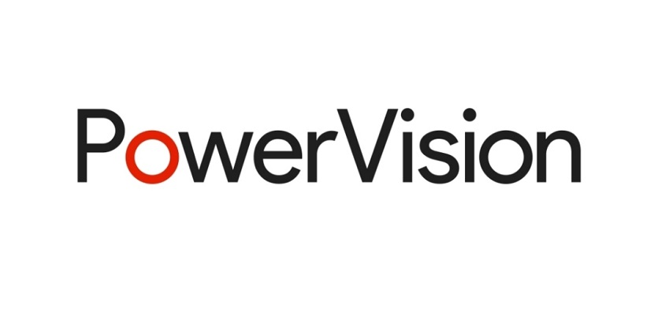北京臻迪智能技术有限公司(2021.1~至今）
-
软件项目经理
1、操盘公司重点战略项目全生命周期的项目管理，确保项目上线交付。 2、建立风险识别机制，精准识别、分析、处理风险、确保目标达成。 3、从0到1参与公司级PMO组建，使公司项目管理线上化，沉淀可复制的项目管理成功实践。
项目经历
-
“御剑飞行”-冲浪板 【团队核心成员：45+】
项目描述： 21年5月初，公司基于疫情大环境下，快速回笼资金的战略目标，为应对复杂多变的市场环境，打造“网红”平民化冲浪运动，将原来以销售为单一变现渠道，增加租赁运营渠道，故需要针对租赁运营场景，新增租赁APP、运营H5端、CRM后台管理系统开发，以及针对已有的冲浪板主控软件、电池BMS软件、遥控器软件及其蓝牙模块软件进行定制化开发，并且要求6月初即：暑假开始前，完成MVP租赁工具的上线交付，按既往项目经验1个月完成需求-开发-测试-上线可能性几乎为0，倒排计划：意味着需求必须1周内输出完善，1周开发，1周自测，1周测试、线上回归，这也是我从0到1构建研发效能管理工作的试点项目。另一方面，整机产品前期的消费群体定位，成本上没有衡量标准，甚至几乎未有考虑成本控制，导致整机成本相较于竞品平均高出2~3W，明确提出降本增效指标为30%。 核心工作： 一、研发效能提升:公司在"电动冲浪板”业务线上急于从产品主导转型到运营主导，基于公司这一战略目标，软件研发团队面临必须大幅缩短交付周期，快速响应市场运营需求，身为此次研发效能提升的Owner，通过对8个项目的深度复盘（从战略拆分、功能模块WBS分解、需求优先级拆分，范围评审及软件各阶段评审甚至代码CodeReview,转测试7个层面）找到改进落地的点并推进落实；通过拉通产品、研发、测试、运营各部门对齐目标，建立度量指标：【需求--完整性、隐藏需求、二义性、性能指标、框架图、业务流程图】、【开发--千行代码bug率、功能提测通过率、一次冒烟通过率、自测用例占比、合并功能项占比、代码复用率占比】、【测试--用例优先级评审、需求打回次数、提测打回次数，reopen的bug占比、风险评估建议】，通过实时监控过程数据，观测【上线交付周期】的结果指标来衡量研发团队的交付效能。按照”21天养成一个习惯”的科学理念指导，经过一个季度的监测，发现整体交付周期从平均45天缩短到30天，缩短约33%。 二、研发效能提升:基于冲浪一直以来属于“贵族运动”，故产品最初的受众群体定位为高端消费群体，整机产品成本过高，与当前“网红平民化冲浪”的产品转型完全背离，降本增效难度极大。作为”降本增效”的Owner，在此竭尽全力达成了目标：1、通过切块分包降低成本：板体材料、结构、包装上、供应链上分析各部分成本，分别设立降本指标；2、动力上通过电池增效实现降本：软件上优化SOC电池算法，释放更多电量，延长航时；电机上将原有10级电机更换动力更强的16级电机。 业绩： 1、软件敏捷周迭代流程从无到有，通过拉通产研团队与市场运营团队，实现了高效响应运营需求变更的能力； 2、从0到1打造操盘租赁工具软件开发，即完成一个MVP基线版本，4个小版本敏捷迭代交付； 3、通过推行统一的“语雀”在线协作工具，同步各模块每日计划任务，集中优势力量优先完成跨多模块任务，化解了团队分散于北京、苏州、海南甚至海外等多地，沟通困难的矛盾； 4、按时交付租赁工具，完美匹配市场运作，组织国内11市夏季巡演体验活动、国外穿越直布罗陀海峡、阿姆斯特丹、迪拜巡演，顺利成立苏州常熟、海南三亚旗舰店租赁运营中心。 链接
-
项目集管理（让“蛋”飞起来-无人机、“快到碗里来”-机库） 【团队核心成员：70+】
项目描述： 依据公司级战略目标，将“无人机”、“机库”项目进行项目集管理。操盘立项、排期、进度跟踪、风险预警评估、结项等项目集全生命周期管理过程。团队赋能：利用自己丰富的项目管理经验为公司团队赋能。 一、建章立制，优化流程:结合对公司过往项目分析得出的可改进点，独立完成《项目章程》编写并拉通对齐中高层战略目标，横跨5个一级职能部门，涉及12+三级组织，前后涉及120+人团队，通过正式的评审流程形成后续项目启动的必备文档，在项目章程中明确了项目目标（愿景）、项目的范围、项目的阶段划分和关键里程碑任务、验收标准，尤其针对项目团队的沟通、执行明确了具体的《团队章程》，如：会议管理制定：会必议、议必决、决必行，行必果的12字行动方案；风险管理中提供统一的风险清单工具，明确要求每个模块必须要有自己的风险清单，通过以上一揽子方案，成员上线交付版本周期缩减30%~40%。 二、建立CCB变更控制委员会：通过建设控制变更的管理方法，引入2级CCB（项目级CCB、组织级CCB），独立设计出变更跟踪工具，当发起变更的部门/人员，根据该工具梳理变更需求后，据21年Q3季度数据统计，有效识别出无效、非必要变更共计23项，预计工期约1.5月，相当于一个季度内的交付周期就缩短了50%。 三、独立策划”春雷计划“季度项目奖和”月度之星“激励政策：拉通并对齐中高层对于在项目中能落地”按时交付“意识的团队和个人，基于此评选出真正为项目带来增长价值的优秀团队/个人，制定总包50W奖金包”21年Q2季度春雷计划“项目激励评选规则、评奖与颁奖流程，共涉及3大战略项目，15+子项目报名，各评选环节亲力亲为，对每一子项目的交付成果、项目过程数据、质量维度等逐个核对，首次提出按照”按时交付“、”工作量“、”难度系数“、”月度之星次数“、”主观评价“四个维度进行不同权重加权试算，最终顺利完成整个”春雷计划“激励评奖，激发了团队争当标杆的积极主动性，得到领导和团队一致认可。 业绩： 1、通过评审达成一致的项目章程，成员明确目标、范围、清晰关键里程碑节点和验收标准，执行中又有高效的会议沟通渠道，以及对风险有统一的管控，使得项目交付周期缩减 30%~40%； 2、通过1 by1_Talk，洞悉个人目标与整体目标的差异后，与成员求同存异，达成总体目标，建设具有凝聚力的团队； 3、通过为团队构建项目愿景，让团队觉得是在做一件非常有价值、有前景、有远见的项目，构建起团队的战斗力； 4、建立两级“CCB需求变更控制”管理流程，避免随意变更/增加需求，一季度内项目交付周期缩短约50%； 5、公开透明、公平公正的”春雷计划“和”月度之星“激励机制，让团队和个人的”按时交付“意识真正落地。

 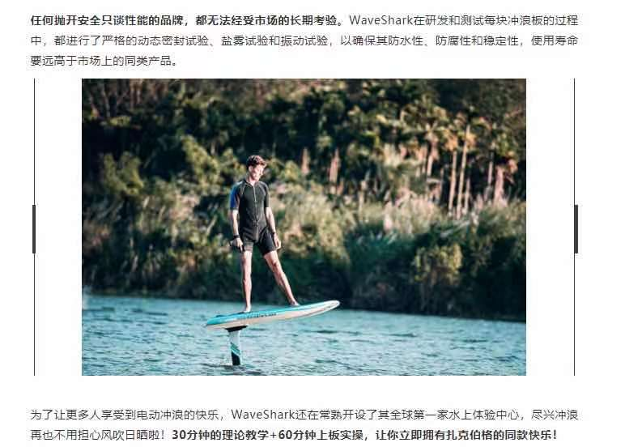
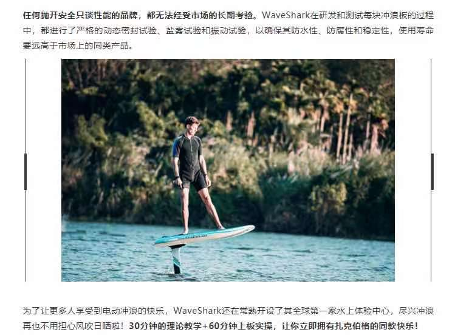
 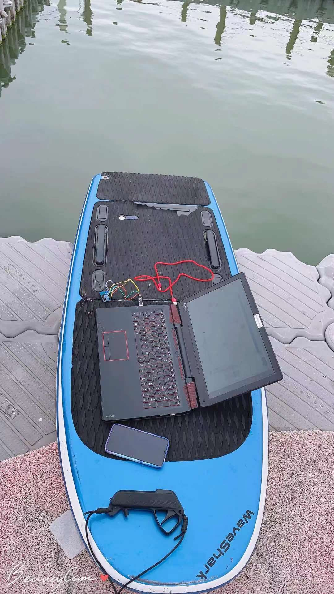
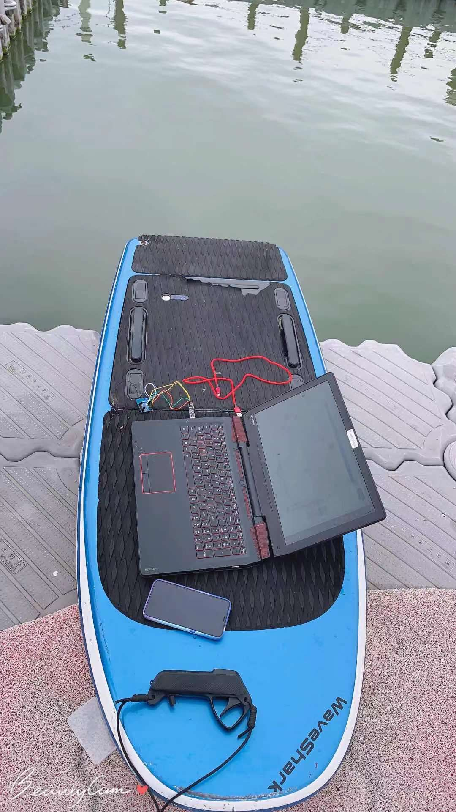
 奥鹏教育集团-慕课网（2018.11 - 2021.1）
奥鹏教育集团-慕课网（2018.11 - 2021.1）-
项目经理
1、2019年达成873W知识付费内容销售转化，2020年达成1226W知识付费内容销售转化。 2、2019年通过老项目内容迭代，增加内容创新，实现环比增长 166.67+；同比增长90%+，获项目组、公司领导赞誉。 3、后端（含Java、Go、数据库等）付费内容带头人，负责新人带教。 4、从0到1参与公司付费内容项目管理流程建设，使内容生产管理线上化，沉淀可复制的项目管理成功实践。 5、负责Java方向付费内容项目管理、选题立项、技术选型。
项目经历
-
天天吃货电商平台
项目描述： 依托于真实电商项目，从解决初期单体问题开始，随着项目不断演变，到掌握解决电商平台“高可用、高并发、高性能”的技术需求,围绕着已有2年左右Java软件开发经验的程序员,期望快速晋升高级工程师的“痛点”，让学习用户亲历千万级电商项目从0到100的成长全过程，掌握技术干货，早日实现“升职加薪”快车道。 项目职责： 1、负责项目全生命周期管理，并完成项目的上线； 2、负责优化项目管理过程中所涉及的团队协作能力、电商平台研发效率、内容生产效率及关联风险识别； 3、通过对项目目标的支持和服务，与团队review资源配置，高效拆分任务，制定合理进度计划并落地。 业绩： 1、该项目成为公司级头部内容项目，引领IT知识付费行业首款企业级电商平台内容，达成年销售额1000W以上； 2、从0到1打造项目，即完成一个基线大版本，4个小版本（单体、集群、分布式、微服务架构）迭代； 3、模块开发过程简化,从项目程序开发、内容生产到上线前文案包装设计，最终整个内容上线时间缩短约30%。
-
微服务网关设计与实战
项目描述： 结合2019年企业级技术对微服务技术如火如荼的市场形态，面向中高端技术群体，设计以Go为主语言，微服务网关等底层技术为内容核心，以实战为向导的微服务网关设计与实现为主体的内容付费产品/项目。 项目职责： 1、启动阶段：负责论证内容商业价值，进行市场调研，确定内容是否符合市场需求，具有高付费转化潜力； 2、规划阶段：商业论证通过后，与商务部沟通人员需求，与内容团队（供应商）进行WBS任务分解，进度规划等； 3、执行阶段：执行过程，定期review进度，识别和分析风险，制定风险应对和解决措施，确保按时交付上线； 4、监控阶段：运用项目管理工具监控项目质量、进度、风险等项目各维度监控，及时纠偏纠错； 5、收尾阶段：与文案部确定营销文案、与推广部确定推广方案、与产研部沟通确保0故障上线，上线确保用户服务； 业绩： 1、打破小众方向三年来0一线内容的局面，创造Go语言小众高端市场一线头部内容（年销售：百万+）； 2、开启Go语言方向新的篇章,成为操盘公司创新型项目-GO金职位内容项目发起人。
 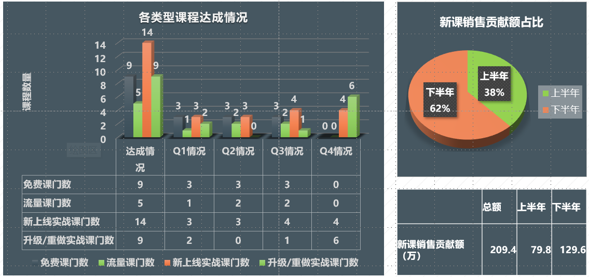
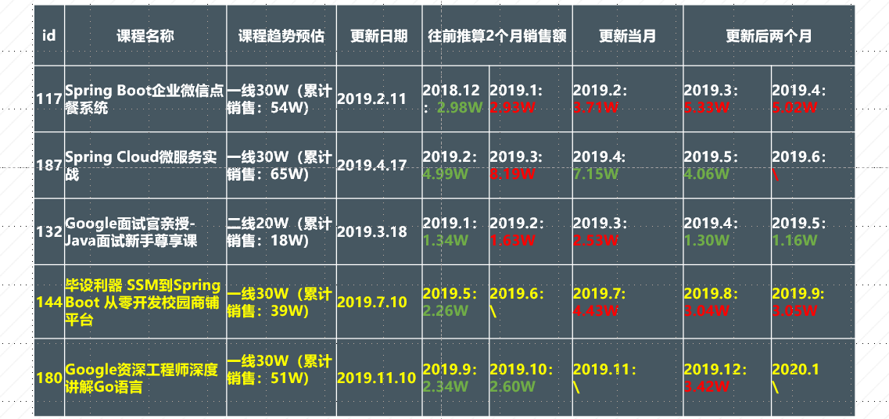
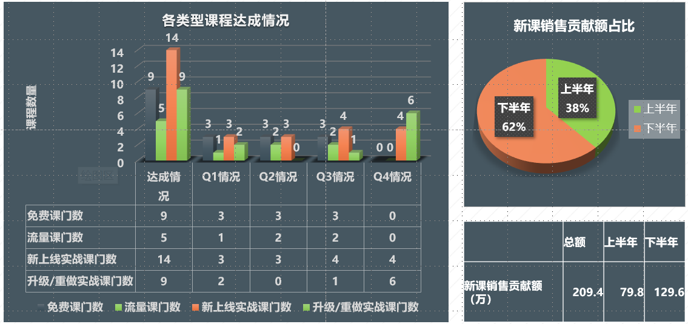
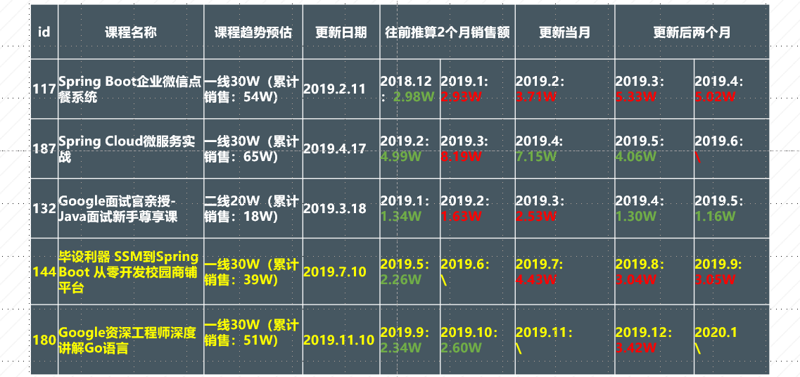
 去哪儿网（2017.11 - 2018.11）
去哪儿网（2017.11 - 2018.11）-
Java高级开发工程师
1、负责将需求分解为具体的开发任务，并排布任务，指导小组日常开发任务，负责向上汇报进度、风险等。 2、收益系统：为系统实时自动化决策提供输入，为公司不同时间段、季节调整航线提供决策依据，实现收益最大化。 3、机票系统：采用模板模式封装各个险种的生单流程，使得险种易于扩展，让系统具备高可用、扩展性。
项目经历
-
机票-团票通平台和收益系统
项目描述： 团票通营销活动渠道购买的机票及保险，涉及search、booking、生单、支付、退款各流程涉及的三十多个业务子系统功能。而团票通平台关联的收益系统是衡量项目创造价值核心指标，是各类决策的依据，收益系统根据内置的一些指令实时获取包机相关客座率等相关信息，进行自动的调舱，如：升舱、 降舱、补仓等，从而实现包机业务的最大收益。同时开发相关图表功能，直观查看收益相关信息，如客座率、日上客差值、竞比环比、收入等。 项目职责： 1、负责对接产品、运营部门需求，以“产品思维结合技术可行性评估和指导开发工作”，提升用户体验； 2、机票系统“高内聚低耦合”优化：工厂模式封装各个险种的生单Bean，业务层只需要持有工厂Bean的引用； 3、根据系统实时监控信息，对原有业务逻辑维护、线上bug以及故障修复。

 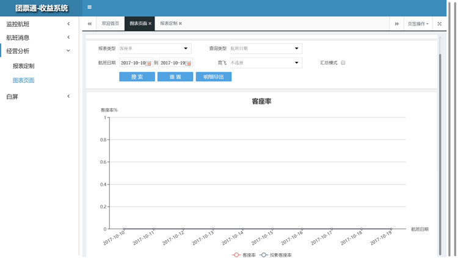
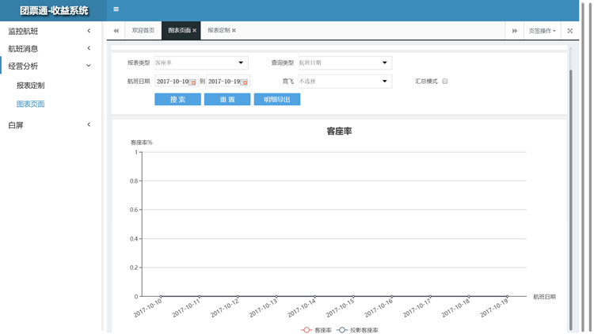
 启明星辰（2015.11 -2017.10）
启明星辰（2015.11 -2017.10）-
Java研发工程师
1、分布式关联分析系统开发、维护和优化：利用JDK新特性，精简10倍代码量。 2、利用机器学习技术，为日志范式化提供新思路：采用“聚类算法”实现日志自动范式化，降低知识工程师人力投入。 3、各类日志采集服务，采用模板插件方式开发，是的插件易于扩展和按需付费，用户的产品体验更好。
项目经历
-
日志采集&日志审计系统
项目描述： 日志采集：针对不同的应用通过授权，能够采用不同的采集方式， 在采集器中，每一种采集方式都被定义为一个插件， 这个插件在自己的代码控件中实现本身特有的采集功能， 并自己控制插件配置的保存和读取。日志审计：能实时采集企业和组织中各种不同厂商的安全设备、 网络设备、主机、操作系统、以及各种应用系统产生的日志、事件、报警等信息，并将数据信息汇集到审计中心，进行集中存储、 展现、查询和审计。
技术栈： 前端栈：Jquery；统计分析图表展示框架：echarts 后端栈：elasticsearch用于快速检索，kibana用于分析展示，nutz框架等 原型设计：Axure RP Pro 7.0 设计文档：Word2010;Visio2010 分析工具：思维导图Mindjet、Xmind等 进度规划：Project2010（甘特图)
项目职责： 1、各采集插件服务的研发工作，实现的采集插件包括但不限于:apache、iis、 jdbc、textfile、textfilepath； 2、负责日志审计系统中：规则、审计、告警模块的开发，维护，规则是审计的前提，告警是审计的结果； 3、负责开发针对匹配规则的某些事件产生告警通知用户的智能告警系统，提高用户所处网络环境的安全性。
业绩： 1、日志采集系统基于“插件模式”开发，对已部署系统，能不断添加新开发的采集插件，特别便于不同场景产品化； 2、从1到100完善采集器系统，丰富采集系统插件，即完成一个基线大版本，新增5个小版本迭代； 3、插件化开发模式，缩减产品功能的上线时间，同时评审流程简化，最终带来产品上线时间缩短约50%。
分布式关联分析系统
项目描述： 关联分析中心建设思路旨在南方电网项目中独立出关联分析中心，从而减轻系统对CPU的消耗，提升产品运行速度。关联分析中心是未来承载TSOC安全管理平台的事件规则告警的分析中心，实现事件分析独立分布式的处理建设目标。
技术栈： TMS框架：基于github上开源的Kryonet封装的一套类似于RPC框架(类似于：dubbo、netty等RPC框架) 消息服务中间件：Kafka、RocketMQ、Redis等
项目职责： 1、负责完成的主要功能有TMS消息服务(即：RPC服务), 支持点对点单向传输和多点双向传输； 2、负责消息客户端MessageClient开发：由客户端发送到服务器，传输数据支持缓存，能够实现断点续传； 3、负责消息客户端RmoteClient开发：由客户端发送到服务器，服务器可返回/不返回数据，可作为单向传输，但不支持缓存，无法断点续传。
业绩： 1、依托于真实行业解决方案抽离出符合通用化产品的功能，丰富产品功能且减轻系统对CPU的消耗，提升产品性能； 2、基于github开源工具Kryonet，独立完成符合公司实际产品体系的TMS框架的开发、并完成产品API文档编写；


 航天宏图（2013.6 - 2015.11）
航天宏图（2013.6 - 2015.11）-
Java开发工程师
1、实习期间表现优秀，毕业后直接参与军工保密项目开发 2、参与军工（总参）数据分析系统和调度系统项目开发。
项目经历
-
410项目开发（保密项目）
项目描述和职责： 项目是为总参部开发，系统由资料存档管理、查询检索、产品分发、产品定制服务、应用调度等5个子系统构成。主要负责查询检索子系统，完成对航天遥感影响产品、专题产品和其他相关数据的检索功能开发；负责应用调度系统开发，实现根据遥感数据规划作战演习路线规划。
技术栈： DWR框架、highcharts、jdk1.6+tomcat6.0+oracle11g+Arcgis、SSH框架
- Certificates. 相关证书
-
资格证书：


谢虹宇的简历
(゜-゜)つロ 干杯~
-
- Contact. 联系方式
- 电话: 156-0051-0487;156-01042995
- 邮箱: 18713505125@163.com
- 微信: xhy1990xhy
- WeChat扫码：
- QQ: 489632554
-
- Application. 应聘岗位
- 项目经理
人生就该逢山开路，遇水搭桥。生活给我压力，我还它以奇迹！